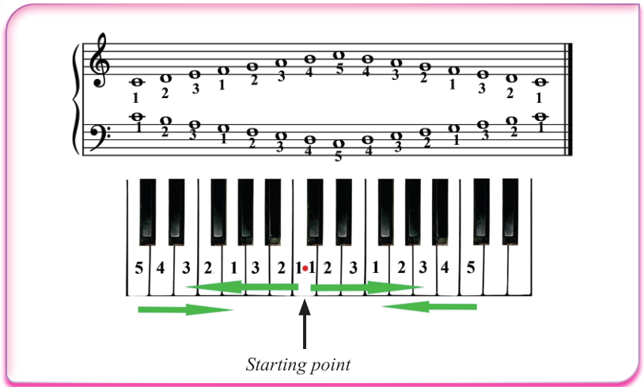

Starting point
How to play the G major scale on the piano
The G major scale includes one sharp on note F (F♯). In order to master playing this scale on the piano, you are advised to start practising one hand after another in the ascending order and later in the descending order. After you have mastered playing with each hand separately, you can play the scale with both hands.
Activity 6.22
The following figures show how G major scale is played on the piano using the right and left hands. Observe the figures and perform the following tasks.
(a)
Use your right hand to play the G major scale on your piano in the ascending and descending order as shown in Figure (a).
(b)
Use your left hand to play the G major scale on your piano in the ascending and descending order as shown in Figure (b).